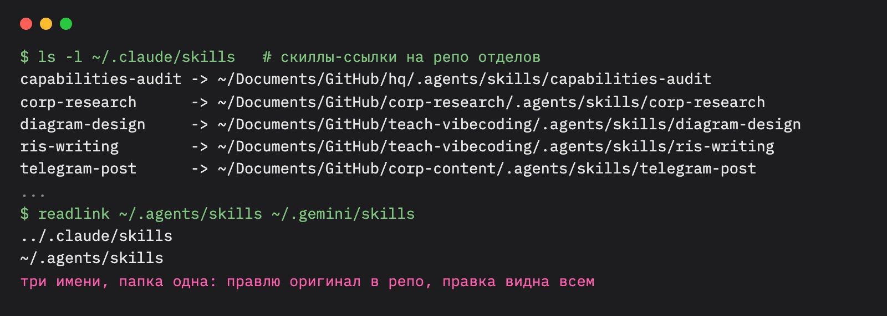
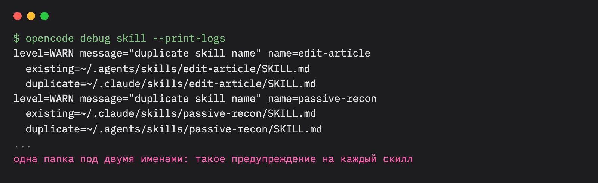
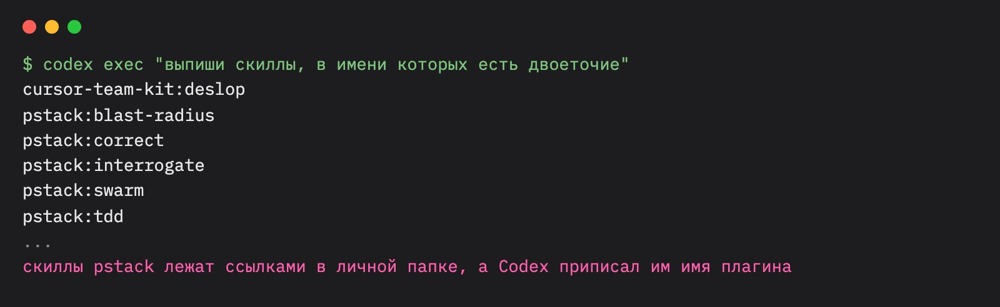

В чате вайбкодеров Air перечислил свой зоопарк: два тарифа Copilot, opencode, Codex и Claude Code. Со скиллами в нём мучение. Codex не ищет их в подпапках. Claude Code только что научился читать AGENTS.md, а до этого, по словам Air, у него были багованные симлинки. Я много раз объяснял эту схему на своих программах, а гайда так и не написал. Факты для него собрал агент: прочитал документацию шести харнесов, открытые баги на GitHub и проверил поведение на моём ноутбуке. Я дал задачу и решил, что войдёт в текст.
Гайд для тех, у кого два-четыре агента и скиллы уже разъехались по их папкам. В одном харнесе свежая версия, в другом старая, в третьем скилла нет совсем. Команд здесь мало. Больше про устройство: где каждый харнес ищет скиллы, как держать один оригинал и где схема ломается. В конце ответ на вопрос Air: какие менеджеры скиллов уже есть и нужен ли ещё один.
Если запилить UI-тулзу для менеджмента скиллов, будет спрос?
Air, чат вайбкодеров, 4 октября
Почему скиллы разъезжаются
Скилл это папка с файлом SKILL.md: инструкция агенту, как делать одну работу. Формат у всех харнесов почти общий. Папки, где его ищут, у каждого свои. Claude Code смотрит в .claude/skills, Copilot в .github/skills, opencode в .opencode/skills. Поставили скилл в одном харнесе, в другом его нет. Скопировали руками, и через месяц копии уже разные.
Пока агент один, этого не видно. Со вторым начинается ручное копирование. С третьим путаница: какая версия свежая и где её править.
В феврале появился выход. Codex с версии 0.94 начал читать общую папку .agents/skills в проекте, а через два дня, в версии 0.95, и личную ~/.agents/skills. Те же папки читают opencode, Copilot в VS Code, Cursor и Gemini CLI. Общий адрес для скиллов появился у всех, кроме Claude Code.
Слова, которые встретятся дальше:
- Харнес
- Программа, в которой работает агент: Claude Code, Codex, opencode, Copilot, Cursor, Gemini CLI. В заголовке я назвал их агентами, в разговоре так проще.
- Скилл
- Папка с инструкцией для агента, как делать одну работу. По описанию в SKILL.md агент сам решает, подходит ли скилл к задаче, или вы зовёте его командой через косую черту.
- Симлинк
- Ярлык на папку. Харнес открывает ярлык и читает оригинал. Для меня это способ держать скилл в одном месте и показывать его всем харнесам сразу.
- Личные и проектные скиллы
- Личные лежат в домашней папке и видны из любого проекта. Проектные лежат в репозитории и видны, только когда агент запущен в нём.
- AGENTS.md
- Файл с правилами для агента в корне проекта. Родной формат Codex. У Claude Code для этого свой файл, CLAUDE.md.
Теперь по жалобам Air. Агент сверил каждую с документацией и проверил у меня:
- ПравдаCodex не ищет в подпапках. Он идёт от папки запуска вверх до корня репозитория, пишет OpenAI. На тестовом проекте Codex из корня не увидел скилл во вложенной папке, а из этой папки увидел и её, и корень. opencode ведёт себя так же, Gemini CLI не идёт даже вверх. Вниз умеют Claude Code, с января, когда агент начинает работать с файлами в подпапке, и Cursor, по документации.
- ПравдаClaude Code только что научился AGENTS.md. Поддержка вышла 18 сентября, запрос висел с августа прошлого года. Работает она запасным вариантом: если в проекте есть CLAUDE.md, AGENTS.md Claude Code не читает, пишет Anthropic.
- Частично устарелоБагованные симлинки. Ссылку на папку скилла Anthropic теперь описывает в документации, у меня она работает. Открыт один баг: меню /skills пишет «No skills found», хотя агент скилл видит и вызывает.
- Правда для плагиновopencode поддерживает не всё. Скиллы из папок Claude Code он читает. Плагины Claude Code нет: у opencode своя система плагинов, а запрос на них закрыли без планов.
Где каждый харнес ищет скиллы
Сводка на 4 октября 2026 года. Codex, opencode и Gemini CLI агент проверил на тестовом проекте, Claude Code в живой сессии. Copilot и Cursor я знаю только по документации.
| Харнес | Общая папка .agents | Своя папка | Подпапки проекта | Симлинки | Как выключить скилл | AGENTS.md |
|---|---|---|---|---|---|---|
| Claude Code | не читает | .claude/skills | находит, когда агент работает с файлами там | работают, меню /skills их не показывает | настройка skillOverrides или пометка «только по команде» в скилле | с 18 сентября, если нет CLAUDE.md |
| Codex | читает с февраля | ~/.codex/skills, устаревает | только вверх от папки запуска | работают, но бывает чужой префикс | запись в config.toml и перезапуск | родной формат |
| opencode | читает | .opencode/skills и папки Claude Code | только вверх | работают, одна папка под двумя именами даёт дубли | разрешения allow, deny, ask в настройках | да, CLAUDE.md про запас |
| Copilot в VS Code | читает | .github/skills и папки Claude Code | в документации не описано | есть открытые баги | только пометка в скилле; в Copilot CLI тумблеры /skills | включается в настройках |
| Cursor | читает | .cursor/skills, а ещё папки Claude Code и Codex | ищет по всему репозиторию | в документации не сказано | только пометка в скилле | да, в корне и подпапках |
| Gemini CLI | читает как второе имя своей | .gemini/skills | только папка запуска | работают, одна папка под двумя именами даёт дубли | команда /skills disable | только если добавить в настройки |
Главное в таблице: личная папка ~/.agents/skills стала общим местом для пяти харнесов из шести. Шестой, Claude Code, читает только свою. На этом и построена схема.
Как это устроено у меня
У меня сотни скиллов в десятках репозиториев. Держится всё на трёх правилах.
Оригинал скилла лежит в репозитории отдела. Отдел у меня это репозиторий, где агенты ведут одну область работы: обучение, исследования, контент. Скилл письма лежит в отделе обучения, скилл исследований в отделе исследований, внутри папки .agents/skills. Так у каждого скилла есть хозяин и история правок в git.
В личной папке лежат только ссылки. В ~/.agents/skills симлинки на оригиналы в отделах. Сама эта папка тоже ссылка: она ведёт в ~/.claude/skills, и для системы это одна папка под двумя именами. Claude Code читает её под своим именем, остальные под общим. Чтобы Claude Code видел и проектные скиллы, в репозитории стоит ещё одна ссылка: .claude/skills ведёт в .agents/skills.
Реестр показывает, что где видно. Реестр живёт в моём штабе: это папка с правилами и знаниями для моих агентов. По последней описи там 86 личных скиллов, 27 скиллов Codex и 422 проектных скилла в 70 репозиториях. Проектные видны, только когда агент запущен в своём репозитории. Скилл другого отдела агент находит по реестру и читает по пути.

У Codex осталась своя старая папка ~/.codex/skills. Часть скиллов в ней тоже ссылки на те же отделы, часть живёт только в Codex. Codex её пока читает, но в issue её называют устаревающей.
Новые скиллы встают в схему одной фразой агенту. 4 октября я попросил поставить pstack, набор скиллов Лорен Тан из репозитория Cursor. Агент скачал репозиторий в папку с остальными проектами и подготовил команду, которая разложила ссылки на 53 скилла. Запустил её я: менять папку скиллов автоматический режим агенту не дал. Обновление теперь одна команда git pull в этой папке. Подробно эта история в гайде «Как доверить агентам код».
Как выглядят ссылки внутри
# оригинал в репозитории отдела ~/Documents/GitHub/<отдел>/.agents/skills/<скилл>/SKILL.md # личная папка: одна на Claude Code и остальных ln -s ../.claude/skills ~/.agents/skills # ссылка на оригинал ln -s ~/Documents/GitHub/<отдел>/.agents/skills/<скилл> ~/.claude/skills/<скилл> # в репозитории: чтобы Claude Code видел проектные скиллы ln -s ../.agents/skills <репозиторий>/.claude/skills
На чём схема спотыкается
Claude Code не читает общую папку. В документации папка .agents прямо стоит в списке того, что Claude Code не читает. Запрос на неё открыт с января. В нём 29 комментариев, последний от 3 октября, со скриптом-обходом через те же симлинки. Поэтому Claude Code нужна своя ссылка: личная папка на личную, проектная на проектную. Хорошая новость: ссылку он читает один раз, даже если на скилл ведут несколько путей.
Одна папка под двумя именами даёт дубли. opencode читает и ~/.claude/skills, и ~/.agents/skills. Что это одна папка, он не замечает и на каждый скилл пишет предупреждение о дубле. Баг открыт. Gemini CLI делает так же со своей папкой и общей: у меня 146 строк «Skill conflict detected» за запуск. Это предупреждения, но в таком логе легко пропустить настоящую ошибку.

Codex приписывает чужое имя. Если выше оригинала по дереву папок лежит манифест плагина, Codex считает скилл частью плагина и добавляет к имени префикс. pstack пришёл из репозитория плагинов Cursor, и у меня скилл tdd в списке Codex стал pstack:tdd. Баг открыт с августа.

Выключать каждый харнес умеет по-своему. В Claude Code есть настройка skillOverrides и пометка в самом скилле «только по команде». В Codex запись в config.toml и перезапуск. opencode берёт разрешения allow, deny и ask, Gemini CLI команду /skills disable. У меня в Codex так выключено пять с лишним скиллов, в Claude Code несколько работают только по команде. Скилл лежит в одном месте, а выключатели у него в пяти разных.
Нужна ли программа с тумблерами
Короткий ответ Air: такие программы уже есть. Начну с установщиков.
- npx skills. Установщик от Vercel и каталог skills.sh, у репозитория 33 тысячи звёзд. Оригинал он кладёт в
.agents/skills, в папки харнесов ставит симлинки, то есть собирает ту же схему сам. Флаг-aвыбирает харнесы:-a claude-code -a opencode. В README около 80 поддерживаемых агентов. Флаг--copyкладёт копии вместо ссылок. 3 октября так встал набор hyperframes, и ссылки сами появились в папках Copilot, opencode и Cursor. - gh skill. Команда в GitHub CLI с апреля, вышла в предварительной версии. Ищет, ставит, обновляет и публикует скиллы для Copilot, Claude Code, Cursor, Codex, Gemini CLI и Antigravity, харнес выбирается флагом
--agent. Сам я её не пробовал: у меня старая версия GitHub CLI.
Теперь программы с тумблерами, о которых спрашивал Air:
- skills-manager от xingkongliang. Приложение для компьютера, 5,4 тысячи звёзд. Больше 50 харнесов, ставит скиллы из git, папок, архивов и каталога skills.sh.
- skills-manager от yibie. Приложение для macOS на Claude Code, Cursor, Copilot CLI, Codex и Gemini CLI, 450 звёзд.
- skillshare. Программа для терминала, 2,7 тысячи звёзд. Раздаёт скиллы, агентов, MCP и плагины во все харнесы и умеет забирать их обратно.
- Встроенные тумблеры. /skills в Copilot CLI, /skills disable в Gemini CLI, skillOverrides в Claude Code.
Нужна ли такая программа вообще, я не уверен. Тумблер решает последний шаг. Главная боль раньше: харнесы читают разные папки, и правила то и дело меняются. Codex переехал на общую папку в феврале, Claude Code научился AGENTS.md в сентябре. У Claude Code, Codex, opencode и Copilot открыты баги с симлинками. Программа с тумблерами должна успевать за всеми шестью, и любое её отставание вы заметите первым.
Агент успевает сам. Он прочитает свежую документацию, спросит каждый харнес, что тот видит, и поправит ссылки. Мне хватает папки-оригинала, симлинков и реестра. Остальное делает одна фраза агенту.
В одном Air точно прав: редкие скиллы стоит убирать с глаз модели. В Claude Code для этого есть пометка «только по команде». Такой скилл агент сам не вызывает, он срабатывает, когда сообщение начинается с его имени через косую черту.
Какие принципы здесь работают
Скиллы тут скорее повод. Эти правила подходят для любых файлов, которые читают ваши агенты: правил, промптов, шаблонов.
Один оригинал, остальное ссылки
Копия устаревает с первой правки оригинала. Ссылка всегда показывает то, что лежит в оригинале сейчас. Как с договором: коллегам дают ссылку на документ в облаке, и правки видят все.
У оригинала есть хозяин
Скилл лежит там, где им пользуются чаще всего. Там его история правок и там его чинят. Как с регламентом: он хранится в отделе, который его ведёт, остальные знают, где его взять.
Проверяйте глазами харнеса
Документация обещает одно, баги делают другое. После каждой перестановки спросите сам харнес, какие скиллы он видит. Как с новым ключом: прежде чем раздать дубликаты, его пробуют в замке.
Записывайте, что где видно
Через месяц никто не помнит, какой скилл в каком харнесе включён. Таблица отвечает за секунду. Как с кладовкой: опись на двери экономит час поисков.
Расставлять ссылки поручите агенту
Скачать репозиторий и разложить симлинки агент может по одной фразе. Вам остаётся решить, что ставить и что выключить. Как со сборкой шкафа: винты крутит мастер, место для шкафа выбираете вы.
Как повторить
- Выберите оригинал. Для личных скиллов это
~/.agents/skills, для проектных.agents/skillsв репозитории. - Попросите агента собрать скиллы. Например: «найди мои скиллы во всех харнесах, перенеси в одну папку, в остальные поставь симлинки, дубли и разные версии покажи мне».
- Свяжите Claude Code с общей папкой. Если он у вас есть, ему нужна ссылка между
~/.claude/skillsи~/.agents/skills, в проектах между.claude/skillsи.agents/skills. Направление ссылки неважно. - Сверьте имена. Имя в SKILL.md должно совпадать с именем папки. Этого требуют opencode и Copilot, а Copilot скилл с другим именем ещё и молча пропускает.
- Спросите каждый харнес, что он видит. Одна фраза «какие скиллы ты видишь» в каждом. Меню /skills в Claude Code для проверки не годится: ссылки оно пока не показывает.
- Запишите, что где видно. Одна таблица: скилл, где оригинал, в каких харнесах виден, где выключен.
Новые скиллы ставьте через npx skills с флагом -a, он соберёт ту же схему сам. Или одной фразой агенту, как я поставил pstack.
Через полгода папки снова поменяются. Claude Code, может, научится общей папке, кто-то из остальных сломает симлинки. Схема с одним оригиналом это переживёт: поменяются две-три ссылки, скиллы останутся на месте. Как раздавать свои скиллы другим людям, я писал в заметке про плагины и маркетплейсы. Как держать их одинаковыми на четырёх компьютерах, в заметке про синхронизацию. А зачем вообще скиллы, в заметке про перенос опыта между проектами.
Air, если всё-таки соберёшь свою тулзу, приходи показать в чат вайбкодеров. Остальных там тоже ждём со своими схемами. Разборы таких штук выходят в канале «рис. AI».
Повод: сообщение Air в чате вайбкодеров. Документация: Claude Code, скиллы и память, changelog; Codex, скиллы и AGENTS.md; opencode; Copilot, VS Code и CLI; Cursor; Gemini CLI. Баги: Claude Code #16345, #14836, #6235; Codex #40070, #10493; opencode #46327, #8158; VS Code #315979. Установщики и менеджеры: vercel-labs/skills, skills.sh, gh skill, xingkongliang/skills-manager, yibie/skills-manager, skillshare. Звёзды и версии на 4 октября 2026. Реплика Air слегка сокращена.